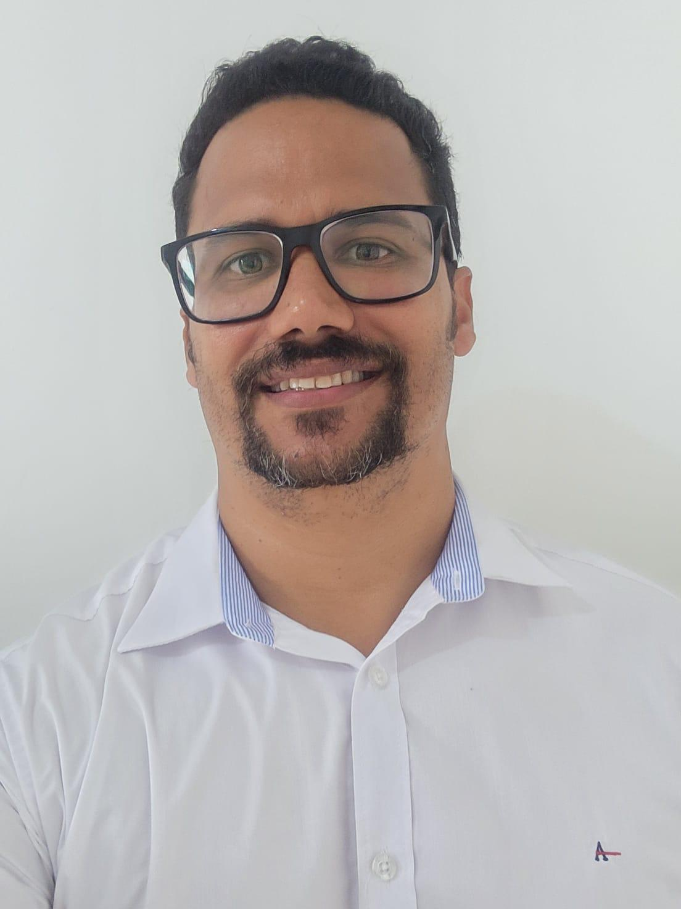

Leandro de Castro Pereira
Desenvolvedor Backend | Especialista em JAVA | Arquiteto de Soluções | MBA em Gestão de Negócios
Backend Developer | JAVA Specialist | Solutions Architect | MBA in Business Management
Resumo Profissional
Professional Summary
Profissional com mais de 18 anos de experiência em gestão administrativa, TI e desenvolvimento de software...
Professional with over 18 years of experience in administrative management, IT, and software development...
Experiência Profissional
Professional Experience
- Corporis Sanu - Gerente Administrativo e de TI (2006 – 2024)
- Inter Valor - Técnico em Manutenção (2005)
- SICM - Técnico em Manutenção (2003 – 2004)
- INFORUY - Desenvolvedor de Software (2003 – 2006)
- Corporis Sanu – Administrative and IT Manager (2006 – 2024)
- Inter Valor – Maintenance Technician (2005)
- SICM – Maintenance Technician (2003 – 2004)
- INFORUY – Software Developer (2003 – 2006)
Formação Acadêmica
Academic Background
- Especialização em Inteligência Artificial: Conceitos, Ferramentas e aplicações – UNOPAR (2025 - Atual)
- Especialização em Tecnologia Java – UNOPAR (2024 - 2025)
- MBA em Gestão de Negócios – Faculdade Ruy Barbosa (2007 - 2009)
- Bacharelado em Sistemas de Informação – Faculdade Ruy Barbosa (2002 - 2006)
- Curso de Inglês – Dublin School of English, Irlanda (2011 - 2012)
- Specialization in Artificial Intelligence: Concepts, Tools and Applications – UNOPAR (2025 - Current)
- Specialization in Java Technology – UNOPAR (2024 - 2025)
- MBA in Business Management – Faculdade Ruy Barbosa (2007 - 2009)
- Bachelor's in Information Systems – Faculdade Ruy Barbosa (2002 - 2006)
- English Course – Dublin School of English, Ireland (2011 - 2012)
Cursos e Certificações
Courses and Certifications
- CSS3 – Avançado (2025)
- HTML5 – Avançado (2025)
- PHP8 – Avançado (2025)
- Inteligência Artificial – Intermediário e Avançado (2025)
- DORCKER – Intermediário e Avançado (2025)
- KUBERNETES – Intermediário e Avançado (2025)
- PMBOK 7 – Avançado (2024)
- SCRUM – Avançado (2024)
- XP – Avançado (2024)
- Python – Avançado (2024)
- KANBAN – Avançado (2023)
- Gestão de Pessoas – SEBRAE (2009)
- Oratória e Marketing Pessoal (2008)
- MS Project (2003)
- Montagem e Manutenção de Computadores (2001)
- CSS3 – Advanced (2025)
- HTML5 – Advanced (2025)
- PHP8 – Advanced (2025)
- Artificial Intelligence – Intermediate and Advanced (2025)
- DORCKER – Intermediate and Advanced (2025)
- KUBERNETES – Intermediate and Advanced (2025)
- PMBOK 7 – Advanced (2024)
- SCRUM – Advanced (2024)
- XP – Advanced (2024)
- Python – Advanced (2024)
- KANBAN – Advanced (2023)
- People Management – SEBRAE (2009)
- Public Speaking and Personal Marketing (2008)
- MS Project (2003)
- Computer Assembly and Maintenance (2001)
Habilidades Técnicas
Technical Skills
- Linguagens: .NET Core C#, Java, Python, PHP
- Frameworks: ASP.NET MVC, Entity Framework Core
- APIs: RESTful, Microserviços
- Arquitetura: Design Patterns, SOLID
- Bancos de Dados: Modelagem e Administração
- Infraestrutura: Redes e Suporte Técnico
- Languages: .NET Core C#, Java, Python, PHP
- Frameworks: ASP.NET MVC, Entity Framework Core
- APIs: RESTful, Microservices
- Architecture: Design Patterns, SOLID
- Databases: Modeling and Administration
- Infrastructure: Networks and Technical Support
Idiomas
Languages
- Português: Fluente
- Inglês: Avançado
- Portuguese: Fluent
- English: Advanced
Voluntariado e Publicações
Volunteering and Publications
- Instrutor de informática básica para comunidades carentes
- Trabalho social com a Igreja Senhor do Bonfim, Itabuna
- Artigo: Workflowcientefico - Revista Científica (2006)
- Palestrante: Congresso da Sociedade Brasileira de Computação (2004)
- Basic computer instructor for underserved communities
- Social work with Senhor do Bonfim Church, Itabuna
- Article: Workflowcientefico – Scientific Journal (2006)
- Speaker: Brazilian Computer Society Congress (2004)